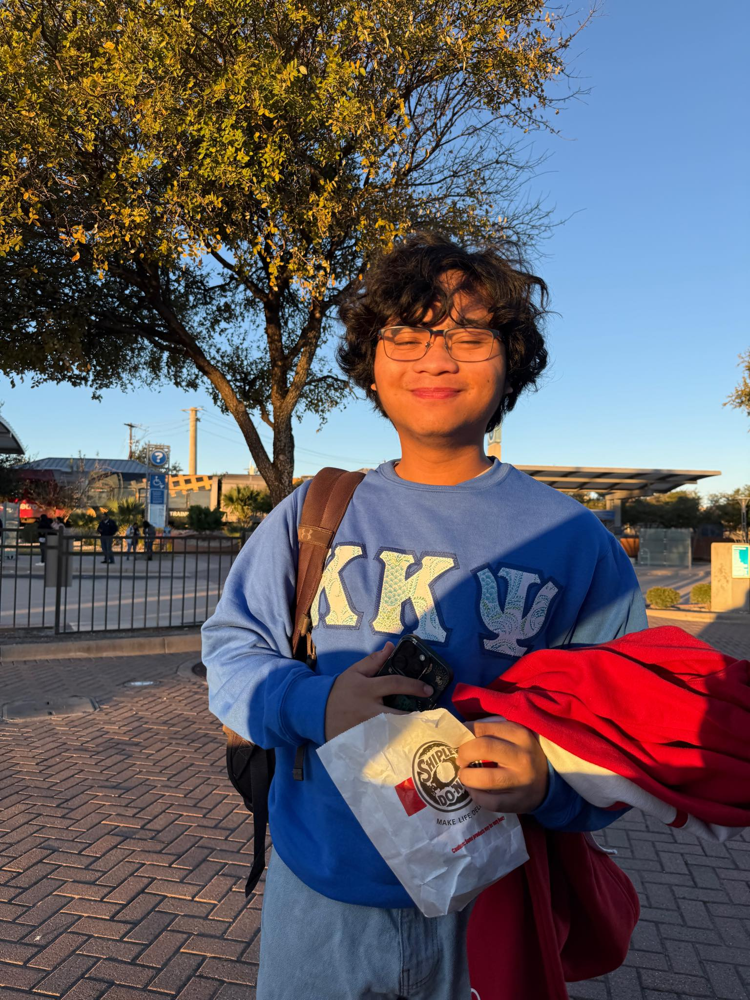

Currently learning..
Embedded labs, RTL, and low-level systems thinking

I'm an Electrical and Computer Engineering (ECE) student at the University of Texas at Austin, specializing in Computer Architecture and Embedded Systems.
My career interests include embedded systems, digital logic, computer architecture, RTL design, and hardware/software projects that connect low-level software with real hardware. I enjoy overseeing and being part of the creative design process that allows a few simple hardware or software components to become a powerful device or product.
In my freshman year of high school (COVID era), I really wanted a PC to play Minecraft on. I asked my dad if he could buy me one from Best Buy and he declined, saying that if I wanted to have a PC I had to build it myself. I was totally up for the challenge but had no idea why he was having me do this. The parts came in, and I got straight to work. As I worked to put all the pieces together like the puzzle it was, I found myself getting increasingly more fascinated as to how these parts fit together, how they work, and how they are made -- in fact, that's the very first thing I looked up on the internet right after it was fully assembled. Researching part compatibility, balancing performance with budget, and assembling the system helped me realize that I wanted to understand how computers work, and maybe even one day, become one of those people who helps design the parts that make it.
Currently, I've been building my technical background through coursework, embedded systems labs, digital logic projects, and personal hardware/software projects. This summer, I am also working as an engineering intern on the Research and Development team at Clairvoyant Networks Inc.!
Embedded labs, RTL, and low-level systems thinking
A FIFO buffer/queue with Verilog/SystemVerilog
A more efficient workflow when doing technical projects